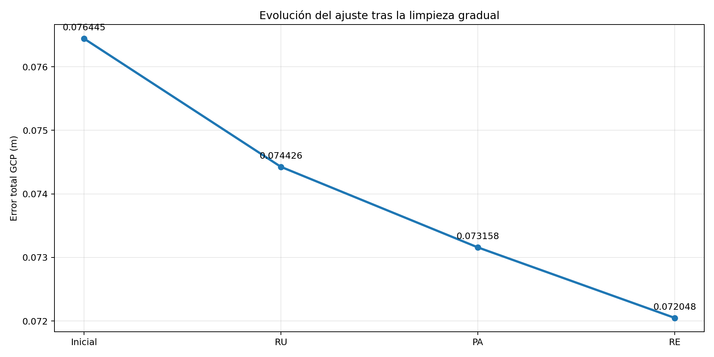
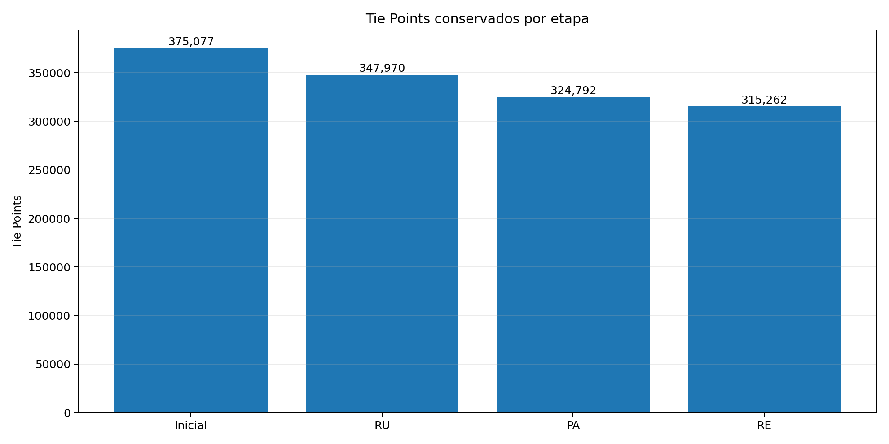

Qué se realizó en esta etapa
La nube dispersa fue depurada en tres ciclos sucesivos: Reconstruction Uncertainty, Projection Accuracy y Reprojection Error. En cada ciclo se ajustó el umbral según el porcentaje realmente seleccionado y, después de eliminar los puntos menos confiables, se repitió la optimización para comprobar que la mejora fuera gradual y estable.
| Criterio | Umbral | Eliminados |
|---|---|---|
| Reconstruction Uncertainty | 67.5 | 27,107 (7.23 %) |
| Projection Accuracy | 5.0 | 23,178 (6.66 %) |
| Reprojection Error | 0.90 | 9,530 (2.93 %) |

Evolución del error GCP.

Tie Points conservados.